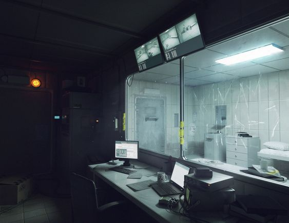

Locations
The Lab

The lab lies dormant beneath the Estrada house, revealing that the home was nothing but a facade. Built by Dr. Moore for an experiment, The Lab is in shambles when found; scientists missing, broken objects scattered everywhere, and most importantly- a plain white room with a big white machine ripped apart by its hinges. What happened here?